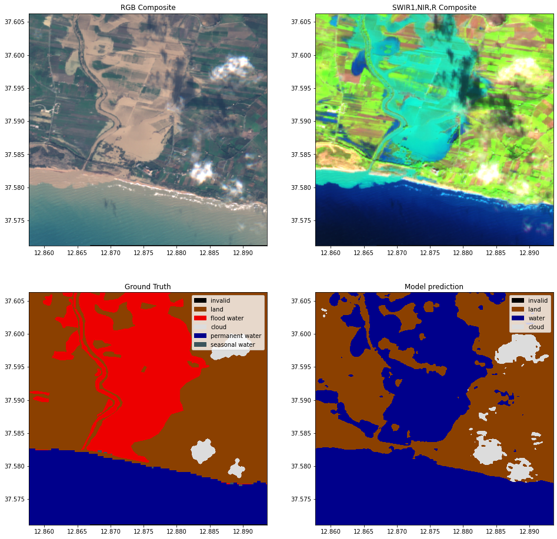
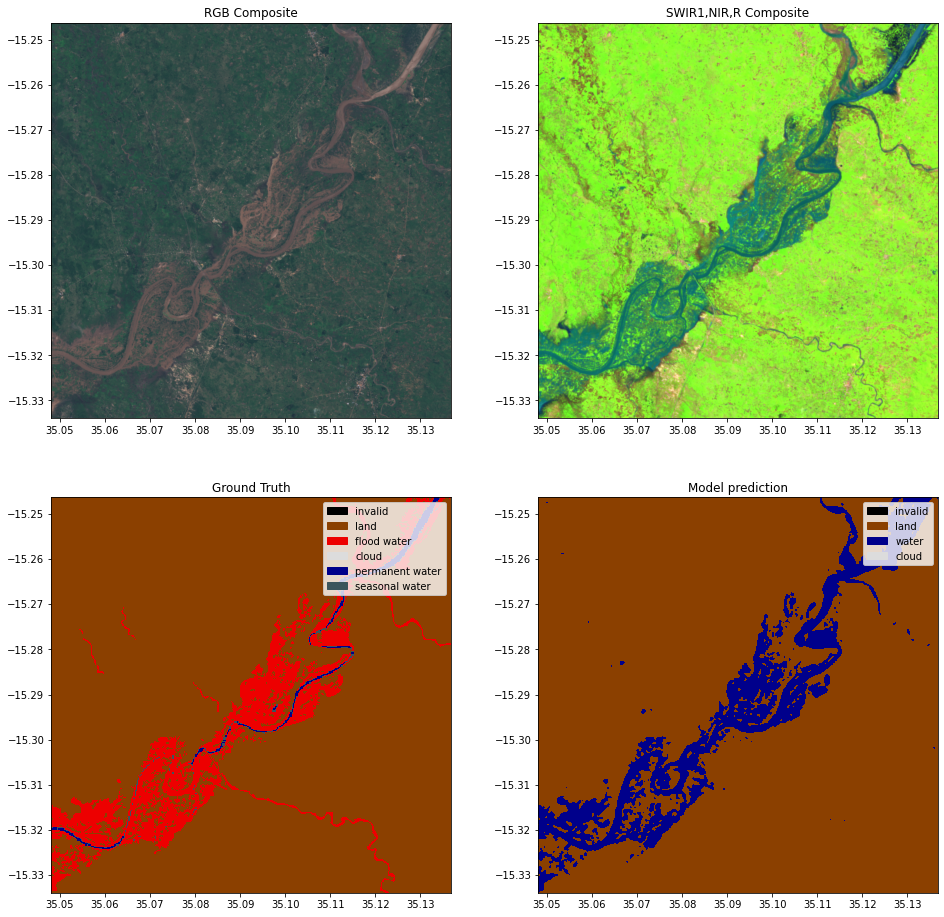
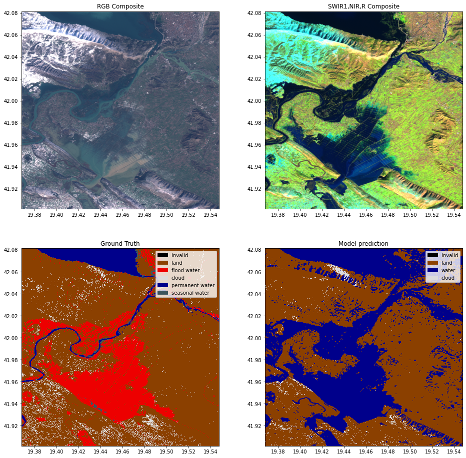

Run inference¶
Run inference on Sentinel-2 images using a trained model
This notebook shows how to load a trained model from a experiment config file. With that model we will then make predictions on new Sentinel-2 images.
import sys, os
from pathlib import Path
from pyprojroot import here
# spyder up to find the root
root = here(project_files=[".here"])
# append to path
sys.path.append(str(here()))
%load_ext autoreload
%autoreload 2
Step 1: Get config¶
from src.models.config_setup import get_default_config
experiment_name = "WFV1_unet"
checkpoint_name = "epoch=24-step=153649.ckpt"
experiment_name = "WFV1_scnn20"
checkpoint_name = "epoch=5-step=24581.ckpt"
config_fp = f"gs://ml4cc_data_lake/0_DEV/2_Mart/2_MLModelMart/{experiment_name}/config.json"
# config_fp = os.path.join(root, 'src', 'models', 'configurations', 'worldfloods_template.json')
config = get_default_config(config_fp)
# The max_tile_size param controls the max size of patches that are fed to the NN. If you're in a memory contrained environment set this value to 128
config["model_params"]["hyperparameters"]["max_tile_size"] = 1024
Loaded Config for experiment: WFV1_scnn20
{ 'data_params': { 'batch_size': 48,
'bucket_id': 'ml4floods',
'channel_configuration': 'all',
'input_folder': 'S2',
'loader_type': 'local',
'num_workers': 8,
'path_to_splits': '/worldfloods/public',
'target_folder': 'gt',
'test_transformation': { 'normalize': True,
'num_classes': 3,
'totensor': True},
'train_test_split_file': 'worldfloods/public/train_test_split.json',
'train_transformation': { 'normalize': True,
'num_classes': 3,
'totensor': True},
'window_size': [256, 256]},
'deploy': False,
'experiment_name': 'WFV1_scnn20',
'gpus': '0',
'model_params': { 'hyperparameters': { 'channel_configuration': 'all',
'label_names': [ 'land',
'water',
'cloud'],
'lr': 0.0001,
'lr_decay': 0.5,
'lr_patience': 2,
'max_epochs': 25,
'max_tile_size': 256,
'model_type': 'simplecnn',
'num_channels': 13,
'num_classes': 3,
'val_every': 1,
'weight_per_class': [ 1.93445299,
36.60054169,
2.19400729]},
'model_folder': 'gs://ml4cc_data_lake/0_DEV/2_Mart/2_MLModelMart',
'path_to_weights': 'checkpoints/',
'test': False,
'train': True,
'use_pretrained_weights': False},
'resume_from_checkpoint': False,
'seed': 12,
'test': False,
'train': False,
'wandb_entity': 'ml4floods',
'wandb_project': 'worldfloods'}
Step 2: Load pre-trained model¶
from src.models.worldfloods_model import WorldFloodsModel
checkpoint_path = f"gs://ml4cc_data_lake/0_DEV/2_Mart/2_MLModelMart/{experiment_name}/checkpoint/{checkpoint_name}"
model = WorldFloodsModel.load_from_checkpoint(checkpoint_path)
model.eval()
model.to("cuda:0")
WorldFloodsModel(
(network): SimpleCNN(
(conv): Sequential(
(0): Sequential(
(0): Conv2d(13, 64, kernel_size=(3, 3), stride=(1, 1), padding=(1, 1))
(1): ReLU(inplace=True)
(2): Conv2d(64, 64, kernel_size=(3, 3), stride=(1, 1), padding=(1, 1))
(3): ReLU(inplace=True)
)
(1): Sequential(
(0): Conv2d(64, 128, kernel_size=(3, 3), stride=(1, 1), padding=(1, 1))
(1): ReLU(inplace=True)
(2): Conv2d(128, 128, kernel_size=(3, 3), stride=(1, 1), padding=(1, 1))
(3): ReLU(inplace=True)
)
(2): Conv2d(128, 3, kernel_size=(1, 1), stride=(1, 1))
)
)
)
from src.models.model_setup import get_model_inference_function
inference_function = get_model_inference_function(model, config,apply_normalization=True)
Getting model inference function
Max tile size: 1024
Step 3: Helper functions for plotting and reading some demo data¶
import rasterio
import numpy as np
from rasterio import plot as rasterioplt
import matplotlib.pyplot as plt
from matplotlib import colors
import matplotlib.patches as mpatches
from typing import Optional, Tuple, Union
import torch
from src.data.worldfloods.configs import BANDS_S2
@torch.no_grad()
def read_inference_pair(tiff_inputs:str, folder_ground_truth:str,
window:Optional[Union[rasterio.windows.Window, Tuple[slice,slice]]],
return_ground_truth: bool=False, channels:bool=None,
folder_permanent_water=Optional[str]) -> Tuple[torch.Tensor, torch.Tensor, torch.Tensor, rasterio.Affine]:
"""
Read a pair of layers from the worldfloods bucket and return them as Tensors to pass to a model, return the transform for plotting with lat/long
Args:
tiff_inputs: filename for layer in worldfloods bucket
folder_ground_truth: folder name to be replaced by S2 in the input
window: window of layer to use
return_ground_truth: flag to indicate if paired gt layer should be returned
channels: list of channels to read from the image
return_permanent_water: Read permanent water layer raster
Returns:
(torch_inputs, torch_targets, transform): inputs Tensor, gt Tensor, transform for plotting with lat/long
"""
tiff_targets = tiff_inputs.replace("/S2/", folder_ground_truth)
with rasterio.open(tiff_inputs, "r") as rst:
inputs = rst.read((np.array(channels) + 1).tolist(), window=window)
# Shifted transform based on the given window (used for plotting)
transform = rst.transform if window is None else rasterio.windows.transform(window, rst.transform)
torch_inputs = torch.Tensor(inputs.astype(np.float32)).unsqueeze(0)
if folder_permanent_water is not None:
tiff_permanent_water = tiff_inputs.replace("/S2/", folder_permanent_water)
with rasterio.open(tiff_permanent_water, "r") as rst:
permanent_water = rst.read(1, window=window)
torch_permanent_water = torch.tensor(permanent_water)
else:
torch_permanent_water = torch.zeros_like(torch_inputs)
if return_ground_truth:
with rasterio.open(tiff_targets, "r") as rst:
targets = rst.read(1, window=window)
torch_targets = torch.tensor(targets).unsqueeze(0)
else:
torch_targets = torch.zeros_like(torch_inputs)
return torch_inputs, torch_targets, torch_permanent_water, transform
COLORS_WORLDFLOODS = np.array([[0, 0, 0], # invalid
[139, 64, 0], # land
[0, 0, 139], # water
[220, 220, 220]], # cloud
dtype=np.float32) / 255
INTERPRETATION_WORLDFLOODS = ["invalid", "land", "water", "cloud"]
COLORS_WORLDFLOODS_PERMANENT = np.array([[0, 0, 0], # 0: invalid
[139, 64, 0], # 1: land
[237, 0, 0], # 2: flood_water
[220, 220, 220], # 3: cloud
[0, 0, 139], # 4: permanent_water
[60, 85, 92]], # 5: seasonal_water
dtype=np.float32) / 255
INTERPRETATION_WORLDFLOODS_PERMANENT = ["invalid", "land", "flood water", "cloud", "permanent water", "seasonal water"]
def gt_with_permanent_water(gt: np.ndarray, permanent_water: np.ndarray)->np.ndarray:
""" Permanent water taken from: https://developers.google.com/earth-engine/datasets/catalog/JRC_GSW1_2_YearlyHistory"""
gt[(gt == 2) & (permanent_water == 3)] = 4 # set as permanent_water
gt[(gt == 2) & (permanent_water == 2)] = 5 # set as seasonal water
return gt
def get_cmap_norm_colors(color_array, interpretation_array):
cmap_categorical = colors.ListedColormap(color_array)
norm_categorical = colors.Normalize(vmin=-.5,
vmax=color_array.shape[0]-.5)
patches = []
for c, interp in zip(color_array, interpretation_array):
patches.append(mpatches.Patch(color=c, label=interp))
return cmap_categorical, norm_categorical, patches
def plot_inference_set(inputs: torch.Tensor, targets: torch.Tensor,
predictions: torch.Tensor, permanent_water: torch.Tensor, transform: rasterio.Affine)->None:
"""
Plots inputs, targets and prediction into lat/long visualisation
Args:
inputs: input Tensor
targets: gt target Tensor
prediction: predictions output by model (softmax, argmax already applied)
permanent_water: permanent water raster
transform: transform used to plot with lat/long
"""
fig, ax = plt.subplots(2,2,figsize=(16,16))
inputs_show = inputs.cpu().numpy().squeeze()
targets_show = targets.cpu().numpy().squeeze()
permanent_water_show = permanent_water.numpy().squeeze()
targets_show = gt_with_permanent_water(targets_show, permanent_water_show)
# Color categories {-1: invalid, 0: land, 1: water, 2: clouds}
cmap_preds, norm_preds, patches_preds = get_cmap_norm_colors(COLORS_WORLDFLOODS, INTERPRETATION_WORLDFLOODS)
cmap_gt, norm_gt, patches_gt = get_cmap_norm_colors(COLORS_WORLDFLOODS_PERMANENT, INTERPRETATION_WORLDFLOODS_PERMANENT)
# +1 because value 0 is invalid
prediction_show = (predictions + 1).cpu().numpy().astype(float)
rgb = np.clip(inputs_show[[3,2,1], :, :]/3000.,0,1)
bands_false_composite = [BANDS_S2.index(b) for b in ["B11", "B8", "B4"]] # swir_1, nir, red composite
false_rgb = np.clip(inputs_show[bands_false_composite, :, :]/3000.,0,1)
rasterioplt.show(rgb,transform=transform,ax=ax[0,0])
ax[0,0].set_title("RGB Composite")
rasterioplt.show(false_rgb,transform=transform,ax=ax[0,1])
ax[0,1].set_title("SWIR1,NIR,R Composite")
rasterioplt.show(targets_show,transform=transform,ax=ax[1,0], cmap=cmap_gt, norm=norm_gt,
interpolation='nearest')
rasterioplt.show(prediction_show, transform=transform, ax=ax[1,1],cmap=cmap_preds, norm=norm_preds,
interpolation='nearest')
ax[1,0].set_title("Ground Truth")
ax[1,0].legend(handles=patches_gt,
loc='upper right')
ax[1,1].set_title("Model prediction")
ax[1,1].legend(handles=patches_preds,
loc='upper right')
Perform Inference using the inference_function¶
from src.models.model_setup import get_channel_configuration_bands
tiff_s2, window, channels = "gs://ml4floods/worldfloods/public/test/S2/EMSR333_02PORTOPALO_DEL_MONIT01_v1_observed_event_a.tif", (slice(1000,None),slice(0,400)), get_channel_configuration_bands(config.model_params.hyperparameters.channel_configuration)
# Load the image and ground truth
torch_inputs, torch_targets, torch_permanent_water, transform = read_inference_pair(tiff_s2,folder_ground_truth="/gt/",
window=window, return_ground_truth=True, channels=channels,
folder_permanent_water="/PERMANENTWATERJRC/")
# Compute the prediction
outputs = inference_function(torch_inputs) # (batch_size, num_classes, h, w)
prediction = torch.argmax(outputs, dim=1).long() # (batch_size, h, w)
plot_inference_set(torch_inputs, torch_targets, prediction, torch_permanent_water, transform)

Lets try another image!¶
tiff_s2, window, channels = "gs://ml4floods/worldfloods/public/test/S2/EMSR347_07ZOMBA_DEL_v2_observed_event_a.tif", None, get_channel_configuration_bands(config.model_params.hyperparameters.channel_configuration)
torch_inputs, torch_targets, torch_permanent_water, transform = read_inference_pair(tiff_s2, folder_ground_truth="/gt/",
window=window,
return_ground_truth=True, channels=channels,
folder_permanent_water="/PERMANENTWATERJRC/")
outputs = inference_function(torch_inputs) # (batch_size, num_classes, h, w)
prediction = torch.argmax(outputs, dim=1).long() # (batch_size, h, w)
plot_inference_set(torch_inputs, torch_targets, prediction, torch_permanent_water, transform)

Lets try another image from the new data prepared by the Janitors!¶
import rasterio.windows
window = rasterio.windows.Window(col_off=1543, row_off=247,
width=2000, height=2000)
tiff_s2, channels = "gs://ml4cc_data_lake/0_DEV/1_Staging/WorldFloods/S2/EMSR501/AOI01/EMSR501_AOI01_DEL_MONIT01_r1_v1.tif", get_channel_configuration_bands(config.model_params.hyperparameters.channel_configuration)
torch_inputs, torch_targets, torch_permanent_water, transform = read_inference_pair(tiff_s2, folder_ground_truth="/GT/V_1_1/",
window=window,
return_ground_truth=True, channels=channels,
folder_permanent_water="/JRC/")
outputs = inference_function(torch_inputs) # (batch_size, num_classes, h, w)
prediction = torch.argmax(outputs, dim=1).long() # (batch_size, h, w)
plot_inference_set(torch_inputs, torch_targets, prediction, torch_permanent_water, transform)
